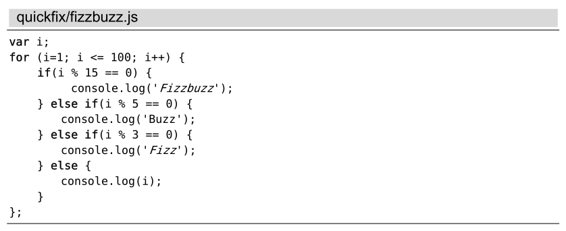
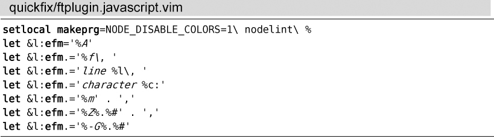

）。通过以下命令，我们可以指示Vim运行nodelint：
）。通过以下命令，我们可以指示Vim运行nodelint：技巧107定制外部编译器
Vim的:make命令不仅限于调用外部的make程序，也可以调用任何安装在你机器上的编译器。（注意，Vim对编译器的定义，比你所熟识的定义更宽松，请参 见‘：compiler’与‘：make’不仅限于编译型语言。）在本节中，我们将对:make命令进行设置，使其可以调用JSLint来验证JavaScript文件，并根据输出的结果填充quickfix列表。
首先，我们要配置Vim，使其在运行:make时可以调用nodelint (1)，即JSLint(2)的命令行接口。nodelint依赖Node.js，它可以通过以下简单的NPM命令进行安装：(3)
➾ $ npm install nodelint -g
我们将使用FizzBuzz的JavaScript实现版本作为本节的测试用例：

配置‘:make’，使其调用Nodelint
‘makeprg’ 选项允许我们指定运行:make时所调用的程序（参见:h 'makeprg'）。通过以下命令，我们可以指示Vim运行nodelint：
➾:setlocal makeprg=NODE_DISABLE_COLORS=1\ nodelint\ %
符号%将被扩展成当前文件所在的路径。因此，如果我们正在编辑文件~/quickfix/fizzbuzz.js，则在Vim中运行:make等于在shell中运行以下命令：
➾ $ export NODE_DISABLE_COLORS=1
➾ $ nodelint ~/quickfix/fizzbuzz.js
《 ~/quickfix/fizzbuzz.js, line 2, character 22: Unexpected '++'.
for (i=1; i <= 100; i++) {
~/quickfix/fizzbuzz.js, line 3, character 15: Expected '===' ...
if(i % 15 == 0) {
~/quickfix/fizzbuzz.js, line 5, character 21: Expected '===' ...
} else if(i % 5 == 0) {
~/quickfix/fizzbuzz.js, line 7, character 21: Expected '===' ...
} else if(i % 3 == 0) {
~/quickfix/fizzbuzz.js, line 12, character 2: Unexpected ';'.
};
5 errors
在缺省情况下，nodelint采用ANSI色标编码把错误信息高亮为红色。而配置NODE_DISABLE_COLORS=1将会禁用颜色高亮，这样一来，就可以更容易地解析出错信息。
接下来，我们得让Vim解析nodelint的输出结果，并根据这些结果来构建quickfix列表。解决这个问题的方式有两种：其一，我们可以配置nodelint，使其输出的结果类似于由make产生的错误信息，这样Vim就可以识别了；或者，由我们来指导Vim如何解析来自nodelint的缺省输出结果。我们将采用第二种技术。
用Nodelint的输出结果填充Quickfix列表
‘errorformat’选项允许我们指导Vim如何解析由:make产生的输出结果（参见:h 'errorformat'
）。通过下列命令，我们可以查看该选项的缺省值：
➾:setglobal errorformat?
《 errorformat=%*[^"]"%f"%*\D%l: %m,"%f"%*\D%l: %m, ...[省略]...
如果你对scanf函数（C语言）比较熟悉的话，那肯定会对即将介绍的概念深有体会。在设置‘errorformat’选项时，每个以百分号开头的字符都有特殊含义。%f表示文件名，%l表示行号， %m表示错误信息。完整的说明列表，请查询:h errorformat。
为了解析来自nodelint的输出结果，我们可以将错误格式的选项设为如下内容：
➾:setlocal efm=%A%f\,\ line\ %l\,\ character\ %c:%m,%Z%.%#,%-G%.%#
自此以后，一旦我们再次运行:make，Vim会采用这种错误格式来解析nodelint的输出结果。对于每一项警告信息，Vim都将提取文件名、行号以及列号，生成一条定位信息，即quickfix列表中的一项记录。这意味着我们可以通过技巧105中所讨论的所有命令，实现在不同警告位置之间的跳转。
用一条命令设置‘makeprg’与‘errorformat’
没有人愿意去记‘errorformat’配置的一大串命令。相反地，我们可以将其保存到某个文件并使用:compiler命令来激活它。通过这种方式对‘makeprg’与‘errorformat’进行配置，既方便又快捷（参见:h :compiler）。
➾:compiler nodelint
:compiler命令会激活一个编译器插件，它会设置‘makeprg’与‘errorformat’选项，使之能够运行并解析nodelint。这一条命令相当于加载了以下多行配置：

编译器插件的内部实现更加复杂，但的确物有所值。通过运行以下命令，你可以将Vim自带的编译器插件了解得更透彻。
➾:args $VIMRUNTIME/compiler/*.vim
注意：尽管nodelint编译器插件并没有随同Vim一起发布，但可以方便地进行安装(4)。如果我们想一直使用nodelint作为JavaScript文件的编译器，则可以采用自动命令（autocommand）或者文件类型插件加以实现。具体操作的过程，请参见A1.3为特定类型的文件应用个性化设置。
‘:compiler’与‘:make’不仅限于编译型语言
在编译型语言的范畴中，单词make与compile均有其特殊的含义。而在Vim中，相应的:make与:compiler命令却具有更灵活的定义，这使得它们同样适用于解释型语言与标记格式文档（markup formats）。
例如，当我们正在编辑某个LaTeX文档时，可以对Vim进行定制，使其在运行:make命令时可将此.tex文件转换成PDF文件。或者，假设我们正在编辑某个解释型语言的源文件，例如JavaScript，也可以配置:make，使其采用JSLint或者其他几种（不那么自以为是的）语法检查器。另外，我们还可以配置:make，使其能够运行测试套件。
在Vim的术语中，编译器是指任何可以针对我们的文档进行处理，并生成错误或警告列表的外部程序。而:make命令只负责调用外部编译器，并对其输出进行解析，以此构建一个可供浏览的quickfix列表。
(1) https://github.com/tav/nodelint
(2) http://jslint.com/
(3) http://nodejs.org/ 与 http://npmjs.org/, 两个网址
(4) https://github.com/bigfish/vim-nodelint